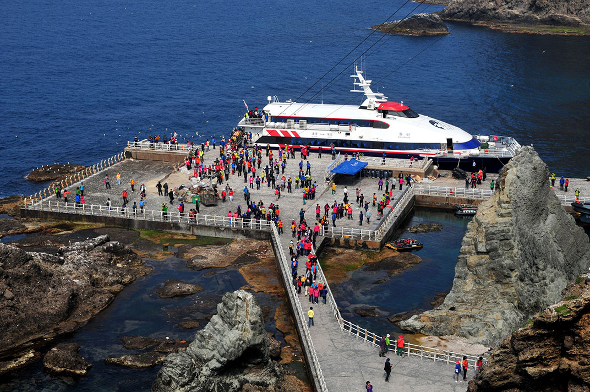

독도여행
독도는 우리나라 동쪽끝에 있는 섬이에요. 독도는 작은 섬처럼 보이지만 사실 거대한 화산섬의 꼭대기 랍니다.
독도 아래에는 넓고 큰 산이 펼쳐져 있어요. 또 울릉도와 제주도보다 먼저 화산활동으로 만들어진 섬이에요.
독도 아래에는 넓고 큰 산이 펼쳐져 있어요. 또 울릉도와 제주도보다 먼저 화산활동으로 만들어진 섬이에요.

<대한민국 영토임을 알리는 독도표지>
독도방문
울릉도에서 여객선으로 1~2시간정도 가면 독도에 도착할 수 있어요.
관광으로 머무를 수 있는 시간은 30분 정도인데 취재나 학술목적인 경우 울릉군에 별도로 신청해서 허가를 받으면 더 오래 머무를 수 있어요.
관광으로 머무를 수 있는 시간은 30분 정도인데 취재나 학술목적인 경우 울릉군에 별도로 신청해서 허가를 받으면 더 오래 머무를 수 있어요.

<독도선착장에 도착한 여객선>
유의사항
1. 출발전 여객선 회사에 연락하여 운항시간을 확인해야 합니다.
2. 날씨가 안좋으면 독도에 입항하지 못할수도 있어요.
3. 독도 관람구역은 선착장만 가능합니다.
2. 날씨가 안좋으면 독도에 입항하지 못할수도 있어요.
3. 독도 관람구역은 선착장만 가능합니다.